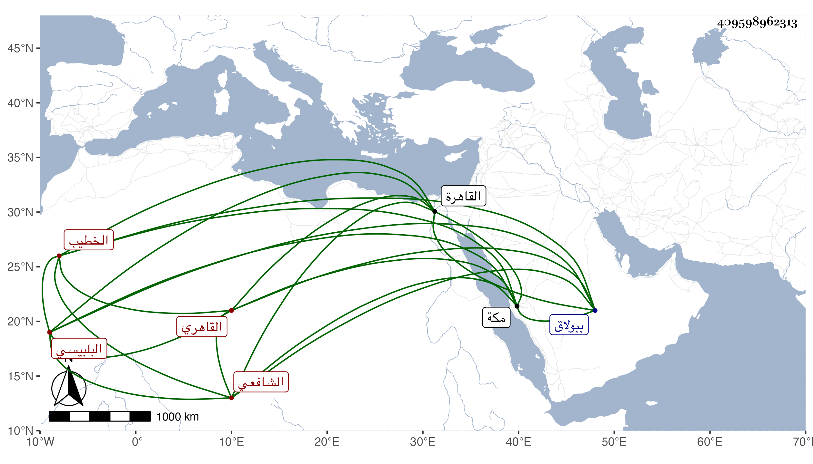

0902Sakhawi.DawLamic.ITO20230111-ara1.EIS1600.409598962313
Biography ID: 409598962313
364
أحمد بن محمد بن عبد الرحمن التاج أبو العباس البلبيسي ثم القاهري الخطيب الشافعي الخطيب . ولد سنة ثمان عشرة أو سبع عشرة وسبعمائة واشتغل وتفقه ولم يحصل له من سماع الحديث ما يناسب سنه ولكنه جاور بمكة فسمع من الكمال بن حبيب عدة كتب كسنن ابن ماجه ومعجم ابن قانع وأسباب النزول وحدث بها عنه وممن سمع من شيوخنا الشمس الرشيدي وولي أمانة الحكم بالقاهرة للبرهان بن جماعة فشكرت سيرته ثم تركها تورعا وزهادة وكذا ناب في الحكم ببولاق وولي التدريس مع الخطابة بجامع الخطيري وسكن به ، ومازال يعرف بالخير حتى مات في ثاني عشري ربيع الأول سنة إحدى . قال شيخنا اجتمعت به والمنني سمعت منه شيئا من معجم ابن قانع ولو كان سماعه على قدر سنه لعلا فيه درجة ، وذكره المقريزي في عقوده .
